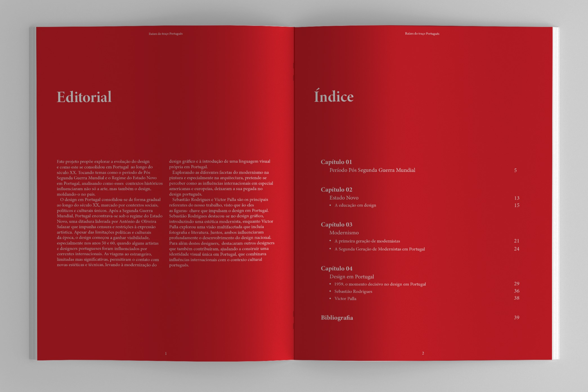
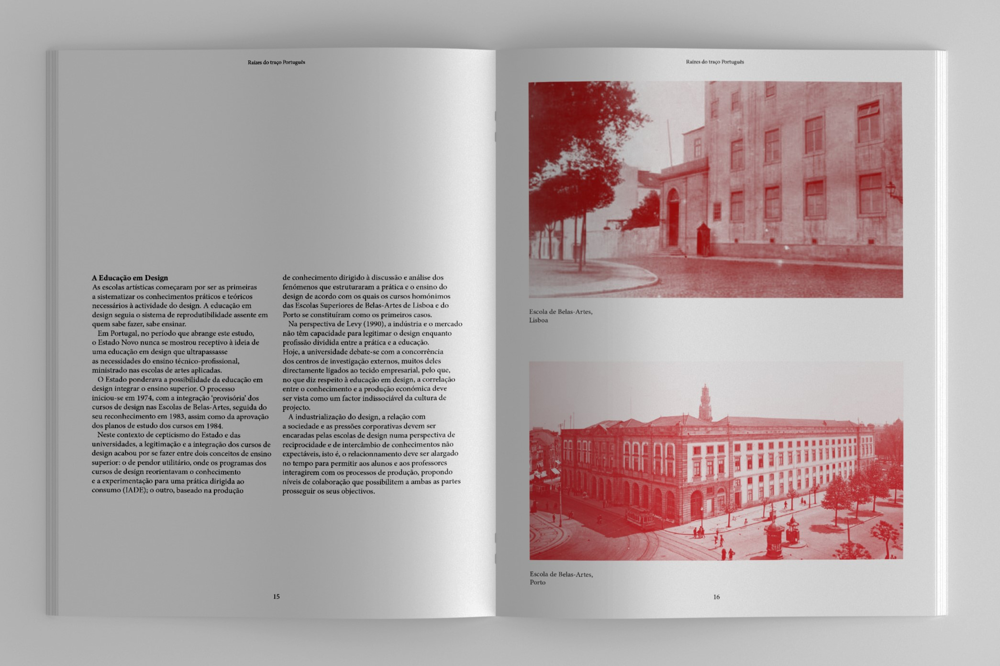
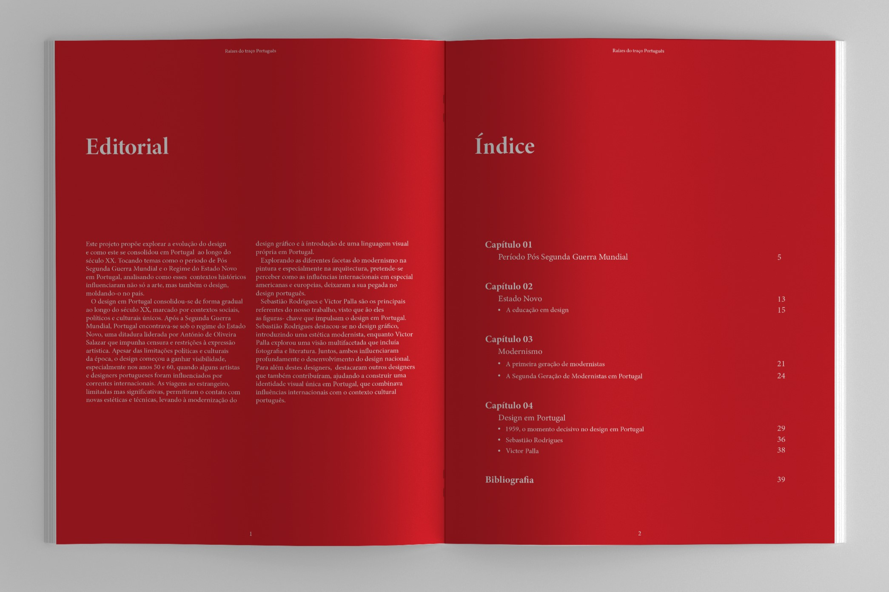
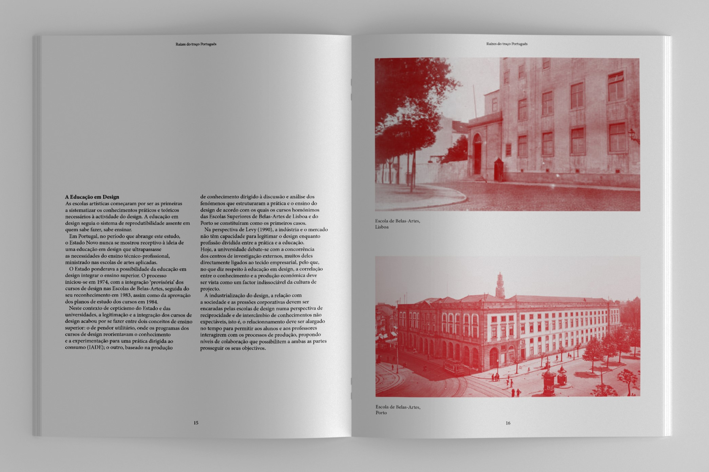
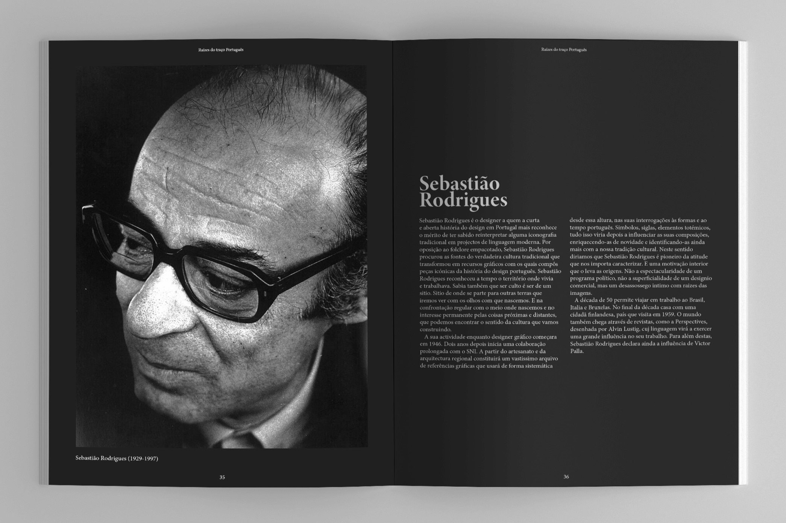
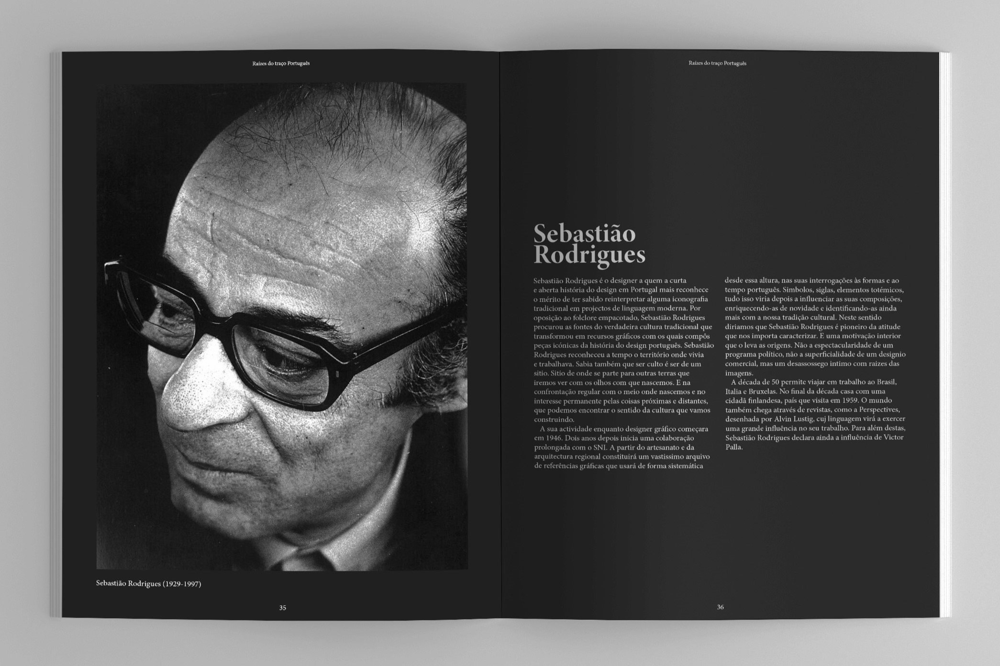

This project proposes to explore the evolution of design and how it became established in Portugal throughout the 20th century. It addresses themes such as the post-World War II period and the Estado Novo regime in Portugal, analyzing how these historical contexts influenced not only art but also design, shaping it in the country.
Objective
To explore the different facets of modernism in painting and especially in architecture, the aim is to understand how international influences, particularly american and european, left their mark on portuguese design.

 



 
